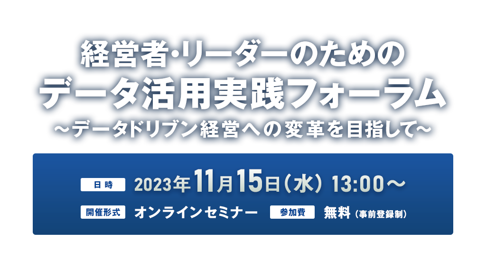

お申し込み受付を
終了しました
企業活動におけるデータ収集が容易になった一方で、各企業がそのデータを正しく、効率的に事業に活かしているとは言い難い現状があります。
「事業部が個別にデータを管理しており、横断的にデータを活用出来ない」
「手作業のデータ管理を自動化し、高効率化を図りたい」
「データ分析、データ活用のための人材を確保できない」
「データ分析の結果を事業活動に結び付けることが出来ない」
等々、企業がもつ課題は様々です。
本フォーラムでは、どのようにデータドリブン経営への変革を目指すべきかを解説します。
本セミナー終了後に主催者アンケートがございます。
ご回答いただきました方の中から抽選で100名様に
「Amazonギフト券（1,000円分）」をプレゼントさせていただきます。
ぜひ最後までご視聴ください。
- ※「Amazonギフト券（1,000円分）」は催事終了後の主催者アンケートへご回答いただきました方の中から抽選で100名様に後日ご登録のメールアドレス宛にお送りさせていただきます。
- ※プレゼントは、お一人様一回とさせていただきます。
- ※Amazon.co.jpは、本プロモーションのスポンサーではありません。
- ※Amazon、Amazon.co.jp およびそれらのロゴは、Amazon.com, Inc.またはその関連会社の商標です。
本セミナーはオンラインセミナー（ライブ配信）です。
開催概要
- 名称
- 経営者・リーダーのためのデータ活用実践フォーラム
～データドリブン経営への変革を目指して～
- 日時
- 2023年11月15日（水）13:00～17:35
- 開催形式
- オンラインセミナー
- 主催
- 日経クロステック
- 協賛
-
- Dataiku Japan、
- デル・テクノロジーズ、
- ドーモ、
- マイクロストラテジー・ジャパン、
- セールスフォース・ジャパン、
- Speee、
- ウイングアーク１ｓｔ
- （ABC順）
- 受講料
- 無料（事前登録制）
プログラム
※講演者や講演時間など、プログラムは変更になる場合がございます。予めご了承ください。
-
13:00～13:30
-
【基調講演】
旭化成グループのデータ資産を活用するデータマネジメント基盤「DEEP」の威力
旭化成
デジタル共創本部
IT統括部 戦略・企画グループ
課長 山崎 力 氏旭化成グループのデータ資産を誰もが活用できるようにするためのデータマネジメント基盤「DEEP」。本講演では、2022年4月に稼働した「DEEP」が、どのようにビジネスからの要求や期待に応えてきたか、基盤としての工夫ポイントや今後の課題を、ご紹介します。
-
13:35～14:05
-
【ソリューション講演】
効果創出の実行解：リテラシー向上を誘うデータマネジメント環境とは
ウイングアーク１ｓｔ
Data Empowerment事業部
事業企画ディレクター 村山 淳 氏データ活用に注力する企業が増える中、業務の効果出しまでは不十分というお悩みを耳にします。
効果を生むためには、システムデータに加え現場データも含めた取扱い方法や、扱う側のヒトの感度も、成長や成熟が必要です。
これらをしっかりと並走させるシステム整備の進め方について、お客様と当社の事例を用いてご紹介します。
-
14:10～14:40
-
【ソリューション講演】
業務効率化とビジネス成長を実現するデータの民主化 〜データドリブン企業への変革を目指して〜
ドーモ
シニアソリューションコンサルタント 後藤 祥子 氏ユニアデックス
執行役員 CIO 須貝 達也 氏社員全員がデータを扱える、データの民主化の実現を目指しDomoを導入したユニアデックス社は、当初「データ整備や集計ノウハウの属人化や、時間がかかる、意思決定にデータを十分活用できていない」という課題を抱えていました。当社が課題解決に向けどのような社内変革を行なったのか、具体例や現場の声を交えてご紹介します。
-
14:45～15:15
-
【ソリューション講演】
データドリブン経営への道：組織変革と競争力強化のためのステップ
セールスフォース・ジャパン
執行役員 Tableau事業統括本部
エンタープライズ営業第一本部長 高梨 成明 氏多くの困難に直面する現代において、データを基にした戦略的な経営判断はますますその重要性を増しています。その一方で、部門を横断した全社規模でのデータ活用は十分に進んでいないというのが現状です。本セッションでは、最新のデータ活用トレンドと実態、見えてきた課題について解説し、データドリブン経営への変革に必要な視点と組織のあり方、具体的なアクション、成功事例をご紹介します。
-
15:20～15:50
-
【ソリューション講演】
生成AIの活用をどう始め、拡大・管理するか

Dataiku Japan
セールスエンジニア 木邑 文彦 氏注目を集める生成AI。安全かつ企業としての信頼性を確保した上で、どう利用できるでしょうか。
生成AIの利用には、従来のAIと同様あるいはそれ以上に、責任あるAIにするための取り組み、そしてガバナンスが必要です。
本セッションでは生成AIの活用を始めるための基本かつコアとなる情報を共有します。
-
15:55～16:25
-
【ソリューション講演】
AIが導く次世代データ活用
マイクロストラテジー・ジャパン
シニアセールスエンジニア 棟方 一成 氏AI機能をBIツールに搭載することで、専門的な知識が無くてもあらゆるユーザーがデータを効率的に活用することを可能にします。
また、AIが今までは見落としがちであった洞察を明らかにし、属人的ではない正しいデータを基にした判断を加速できるようになります。
すでに利用可能なAI機能をデモを交えて、ご紹介します。
-
16:30～17:00
-
【ソリューション講演】
モノづくり企業のDX挑戦から紐解くデータドリブン経営変革のステップ
Speee
マーケティングインテリジェンス事業本部
バントナー事業部
事業部長 大宮 拓 氏「今売れている商品は何か」「新たに開発が必要な商品は何か」「どのターゲットに注力して売ればいいか」をリアルタイムにデータで把握し、経営の意思決定に活かしていく。
そのような状態を目指してDXを推進している企業様多いのではないでしょうか。
しかし、組織・システム・業務プロセス等々、複数の課題が散在し「何から始めればいいかわからない」といった課題に直面している方もいらっしゃるかと思います。
今回の講演では、モノづくり企業の支援事例をもとに、どのようなステップでデータドリブンな組織を実現していくか「今まで」と「これから」についてご紹介いたします。
-
17:05～17:35
-
【特別講演】
ANA グループのデータマネジメント
全日本空輸（ANA）
デジタル変革室 イノベーション推進部
データデザインチーム リーダー 常泉 徹 氏ANA グループは2023-2025 年度中期経営戦略において、「グループ横断でデジタルとデータを活用してビジネスを変革し、価値創造を実現」することを目指している。
現在、グループの新しいレイクハウスである「ANA BlueLake」を稼働させ、順次分析の為の環境を構築すると共にガバナンスの策定や人財育成などにも取り組んでおり、その戦略をご紹介する。
お申し込み
■Webセミナーご受講に際し、以下の事項に同意のうえお申込ください。
- 視聴に必要なURLは、登録完了メールでご確認ください。
また、MyPageからも確認ができます。
URLはセミナーに参加する方のみ利用可能とし、再配布を禁止します。 - 受講者は、動画を録画・キャプチャーすることは一切できません。
もし、発見した場合、事務局は削除を要求できることとします。また、SNSなどへのアップも禁止します。 - セミナーの内容や受講者の個人情報などはセミナー内のみとし、口外しないでください。
- システムトラブルなどにより、画像・音声に乱れが生じた場合も対応出来かねますのでご自身でご調整ください。
- 配信中、異常と思われる接続を発見した場合、予告なく切断することがあります。
お問い合わせ
日経BP読者サービスセンターセミナー係
お問い合わせお申し込み受付を
終了しました